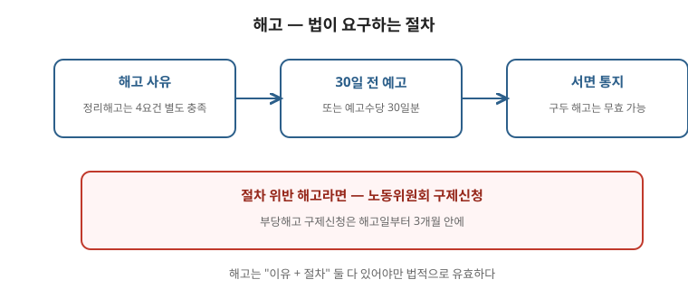

해고 통보를 받았다면 가장 먼저 볼 것은 두 가지입니다. 이유가 정당한가, 절차가 적법한가. 내용이 타당해 보여도 절차가 어긋나면 다툴 여지가 생깁니다. 이 글은 해고예고부터 노동위원회 구제신청까지 시간 순서대로 정리한 안내입니다. 구제신청 기간은 엄격하므로, 통보를 받은 날부터 바로 이 글의 점검표대로 움직이세요. 개별 전략은 해고 절차·노동위원회 구제와 함께 보고 전문가 상담을 받으세요.

한눈에 보는 표 — 해고 대응 4단계
| 단계 | 확인할 것 | 바로 할 일 |
|---|---|---|
| 1. 통보 | 해고 사유·시기가 서면인가 | 통보서 원본 보관, 구두 통보는 문서 요구 |
| 2. 예고 | 30일 전 예고 또는 예고수당 지급 여부 | 예고일·수당 계산 근거 기록 |
| 3. 구제신청 | 해고일로부터 3개월 이내 접수 | 경위서 시간순 정리, 증거 목록화 |
| 4. 결정 이후 | 복직·수당·불복 절차 | 행정소송·민사 병행 여부 상담 |
1. 해고의 두 가지 요건 — 이유와 절차
- 정당한 이유가 있어야 하고, 해고 사유와 시기를 서면으로 통지해야 합니다. 구두 통보만으로는 요건을 갖추지 못한 경우가 많습니다. “말로 들었다”면 서면 교부를 요구하고, 그 과정도 기록하세요.
- 일정 규모 이상 사업장에서는 해고 전 협의·통보 절차가 요구됩니다. 취업규칙·단체협약에 별도 절차(징계위원회 등)가 있으면 그 절차 위반 자체가 다툼의 근거가 됩니다.
- 사유가 “근무태도 불량”처럼 추상적이면 구체적 사실(언제·어디서·무엇을)을 요구하세요. 추상적 사유만으로 한 해고는 다투기 쉽습니다.
2. 해고예고 — 30일 또는 수당
- 해고할 때는 30일 전에 예고하거나 그에 해당하는 통상임금을 지급해야 합니다. 예고 없이 즉시 해고했다면 이 부분도 함께 문제 삼을 수 있습니다.
- 다만 중대한 법규 위반 등 예고 의무가 면제되는 예외가 있습니다. 회사가 주장하는 사유가 실제로 그 예외에 해당하는지 따져야 합니다. 회사의 주장만으로 예외가 인정되지는 않습니다.
- 예고수당은 통상임금을 기준으로 계산합니다. 관련 글 평균임금과 통상임금에서 계산 기준을 확인하세요.
3. 구제신청 — 기간이 가장 중요하다
- 부당해고라고 판단되면 관할 지방노동위원회에 구제신청을 할 수 있습니다. 해고가 있은 날부터 3개월 안에 접수해야 하며, 이 기간을 넘기면 다툴 수 없습니다. 우편 접수는 도착일 기준이므로 마감 직전에는 직접·전자 접수가 안전합니다.
- 신청서에는 해고 경위·근무 이력·회사의 주장에 대한 반박을 시간순으로 정리해 붙입니다. 통보서·문자·메신저·녹취·동료 진술이 증거가 됩니다. 증거는 원본을 지우지 말고 목록으로 정리하세요.
- 신청 후에는 심문회의가 열립니다. 회사 측 주장에 대한 반박을 미리 문서로 준비하고, 새로 나온 주장이 있으면 추가 서면으로 대응합니다.
4. 결정 이후 — 끝이 아니다
- 구제 결정(부당해고 인정)이 나와도 회사가 불복해 중앙노동위원회 재심, 행정소송으로 가는 경우가 있습니다. 각 단계마다 별도 기간이 있으므로 결정문을 받는 즉시 다음 기한을 확인하세요.
- 반대로 기각되면 재심 신청 등 다음 단계를 검토합니다. 기각 이유를 분석해 부족한 증거를 보강하는 것이 핵심입니다.
- 구제 절차와 별개로 해고무효확인 소송(민사)·임금 청구 등을 병행하는 경우도 있습니다. 전략은 사안에 따라 달라지므로 노조·변호사와 상의하세요.
자주 틀리는 3가지
- “말로 해고해도 효력 있다” — 서면 통지 요건을 갖추지 못하면 다툼의 여지가 큽니다.
- “3개월 지나도 된다” — 구제신청 기간을 넘기면 접수 자체가 각하됩니다.
- “예고 없이 자르면 그만” — 예고 또는 예고수당 지급 의무가 별도로 있습니다.
현장 체크리스트 (통보 받은 날 바로)
- □ 통보서 원본(사유·시기 적힌 서면)을 확보했는가
- □ 해고일(기간 기산일)을 달력에 표시했는가
- □ 예고 여부와 예고수당 계산 근거를 기록했는가
- □ 문자·메신저·녹취·출퇴근 기록을 백업했는가
- □ 3개월 마감 전에 전문가 상담 예약을 잡았는가
자주 묻는 질문
- Q. 구두로 “내일부터 나오지 마”라는데 해고인가요? — A. 서면 통지를 요구하세요. 구두 통보만으로는 요건 위반을 다툴 수 있습니다.
- Q. 수습·계약직도 구제신청이 되나요? — A. 고용형태와 별개로 해고 요건·절차를 따집니다. 계약만료와 중도해고를 구분해 보세요. 관련 글 기간제 보호도 확인하세요.
- Q. 회사가 합의를 요구합니다. — A. 합의서·각서에 서명하기 전 반드시 상담을 받으세요. 서명한 뒤에는 되돌리기 어렵습니다.
- Q. 구제신청과 소송을 같이 할 수 있나요? — A. 가능합니다. 다만 절차별 기한과 비용이 다르므로 전략 상담이 필요합니다.
근거와 원문
- 근로기준법 해고 제한·예고·서면통지 규정 — 국가법령정보센터에서 “근로기준법” 검색
- 노동위원회 구제신청 절차 — 중앙노동위원회 누리집
- 관련 글: 해고 절차 요건 · 징계 절차 · 증거 수집 점검표
이 글은 2026-09-19 기준 일반 안내입니다. 구제신청 기간과 요건은 사안에 따라 엄격하게 적용되므로, 해고 통보를 받았다면 즉시 전문가 상담을 받으세요. 법률 자문이 아닙니다.